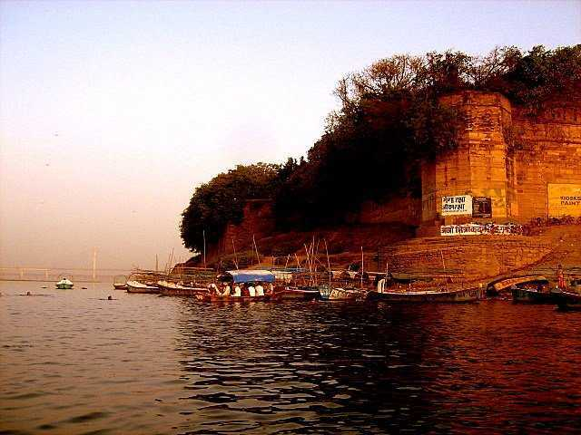

Prayagraj (formerly known as Allahabad) is one of the holiest cities of India situated in the state of Uttar Pradesh

Prayagraj is among the largest cities in Uttar Pradesh. Hindu mythology has it that for the Prakrishta Yajna, Lord Brahma, the creator God of the Trinity, chose a land on earth, on which the three rivers would flow in to a quiet confluence. Brahma also referred to it as Tirth Raj or the King of all pilgrimage centres. Recorded evidence also exists in the revered scriptures (the Vedas and the grand epics, the Ramayana and the Mahabharata, as also in the Puranas) of this holy place formerly called Prayag. Prayagraj stands at the confluence of two of India's holiest rivers, the Ganga and the Yamuna. Sangam, as the confluence is called, is the venue of many sacred fairs and rituals, and attracts thousands of pilgrims throughout the year. This number swells to millions during the world-famous Kumbh Mela. An annual Magh Mela is also held in Prayagraj around the Sangam areas in the month of January (Magh is the name of month in Hindu calendar). A third mythical Saraswati river, believed to flow underground towards the Sangam, gives the confluence its other name, Triveni. Emperor Akbar renamed this city in 1575 and called its name from Prayag to Illahabas, meaning 'Abode of the Gods'. The monarch realized its strategic importance as a waterway landmark in North India and also built a magnificent fort on the banks of the holy Sangam. The name Illahabas soon turned into Allahabad, which was the name of the city until 2018, when it was renamed to Prayagraj. Over the centuries that followed, Prayagraj remained at the forefront of national importance, more so during the days of the Indian independence struggle. The chequered history of Prayagraj with its religious, cultural and historical ethos also gave rise to several renowned scholars (M. N. Saha, Harishchandra, Ravindra Khattree, Amar Nath Jha), poets (Suryakant Tripathi Nirala, Mahadevi Verma, Harivansh Rai Bachchan, Sumitra Nandan Panth), writers (Mahadevi Verma, Ramkumar Verma, Jagdish Gupta), thinkers (Purusottam Das Tandon), statesmen and leaders (Motilal Nehru, Jawaharlala Nehru, Murli Manohar Joshi) and the actor Amitabh Bachchan. The city being an important cantonment during the British Raj has some beautiful remnants of colonial architecture. In the early 20th century, University of Allahabad was the foremost center of learning in the country. Prayagraj today is an important city where history, culture and religion create a confluence, much like the sacred rivers that caress this God-graced land. Prayagraj used to have a thriving industrial suburb (Naini) till the 1980s, but then those public sector units started closing down one by one, forcing entire generations of young educated Prayagrajis to migrate out of the city in search of work. Today, Prayagraj is slowly inching along in its dream to be an IT hub. And the government administrative offices remain alive and kicking.
Attractions
- 1.Allahabad Fort. The Allahabad Fort, built from the year 1583 onwards by Akbar, stands at the junction of the two great rivers. It was the largest of Akbar`s forts, and although its original form has been much impaired by early restoration work, the splendid Zenana Palace still survives. It is a fine pavilion, with a central square hall carried on sixty-four columns bordered by a deep veranda of double columns and there are clusters of four in each corner. Kumbha Mela Under the wall of the palace, there is the so-called `Undying Banyan Tree` or Akshai Vata. In front of the entrance to the-Fort is the `Ashoka Pillar`, 35 feet high, it is made up of polished stone. Edicts of Ashoka are inscribed on it. The fort was later garrisoned under Company Raj, this imposing structure stands on the bank of Yamuna at sangam nose. Due to serious military concerns, only a limited area of the fort can been seen.
- 2.Khusro bagh. 8 am - 8 pm. Khusro Bagh is entered through an old doorway that is 60 feet high. Khusrau was the elder brother of the Emperor Shah Jahan. He died in the year 1615 and the tomb was completed seven years later. The actual burial chamber is underground. It was enriched with plasterwork and was painted with birds and flowers and Persian inscriptions. West of the tomb is another tomb, which is believed to be the tomb of Khusrau`s sister. The place is also known for famous 'Allahabad Guavas'.
-
3.Anand Bhawan 8 am - 4:30pm. Learn about the intricacies of Indian struggle for freedom during early 20th century. Among many things, you will find the personal correspondence and family photographs of the Nehrus. Besides
Anand Bhawan is
Swaraj Bhawan, ancestral place of the Nehru clan. It offers a best way to know about Nehru family via its video shows which are scheduled hourly. Anand Bhawan and Swaraj Bhawan are the places which have served as the parliament in real sense during British era. Many important decisions and happenings have been witnessed by these monuments. (Closed on Mondays) - 5.Moti Mahal and Bari Kothi, Daragunj.
- awahar Planetarium.awahar Planetarium. 11 am-4:30 pm. A place for those who are interested in astronomy. Shows are at every hour and charges are nominal. Children under age of 7 are not allowed.(Closed on Mondays) Rs 20
- 6.Thornhill Mayne Memorial. The marvelous monuments is perched in Company Garden. The monument has served as the house of legislative assembly in British era when Allahabad was the capital of United Provinces. Presently it has been converted to a library which is popularly known as Public Library. The monument is beautifully carved from white sandstones and is drenched in Gothic serenity.
- 7.Allahabad Museum. 9am-4pm. Spot for the lovers of ancient history. The museum is rich in remains of mighty city of Kaushambi and Srungverpur. Allahabad being a historical city, the museum offers a convenient way to explore the history of the city and vicinity.(Monday closed)
- 8.All Saints Cathedral. All Saints` Cathedral, designed by William Emerson (later President of the Royal Institute of British Architects) in complete Gothic style, was commenced in the year 1877. Standing in a grass compound at a major junction, it is in white stone with red sandstone dressings. The pavement to the choir and sanctuary is constructed with pure Jaipur marble. Also known as Patthar Girja among local people, it is one of the oldest and most magnificent churches of India.
- 9.University of Allahabad Campus. Being 4th oldest (formal) university of India, it is a place to see some of the most beautiful monuments drenched in Gothic style. Zoological museum in Department of Zoology homes a unique collection of skeletons of mammoth and elephants.
- 10.Company Bagh (Alfred Park or Chandrashekhar Azad Park)Company Bagh (Alfred Park or Chandrashekhar Azad Park). It is the place to experience the British era of Indian history. Encircled in this park are Allahabad Museum, Victoria memorial and public library. History is scattered at every step in the park. It was in this park where Chandrashekhar Azad, (freedom fighter) shot himself after only one bullet was left in his revolver so that the British can't catch him alive.
- 11.Minto Park, (Between Fort and Yamuna Bridge). A historical spot where 'Company Raj' came to its end and India was formally transferred to the British crown. The park also homes a replica of famous Ashok Pillar upon which the national emblem of Indian Republic is perched.
- 12.Yamuna bridge. A stroll or a cycle ride on the bridge at sunrise or sunset is extremely refreshing.
- 13.Allahabad High Court. It is the seat of Justice in Uttar Pradesh, and is the oldest high court in the country with largest strength of judges.
- 14.Nagvasuki Temple, (In Daraganj).
- 15.Churches and Convents of the city. Allahabad boasts of its magnificent churches that were built during the epoch of British Raj. Some of them are All Saints Cathedral, St Josephs' Cathedral, Evangelical Church and Bethany Convent. Diocese of Allahabad was the first in North India and has played a major role in nurturing the missionaries in the region